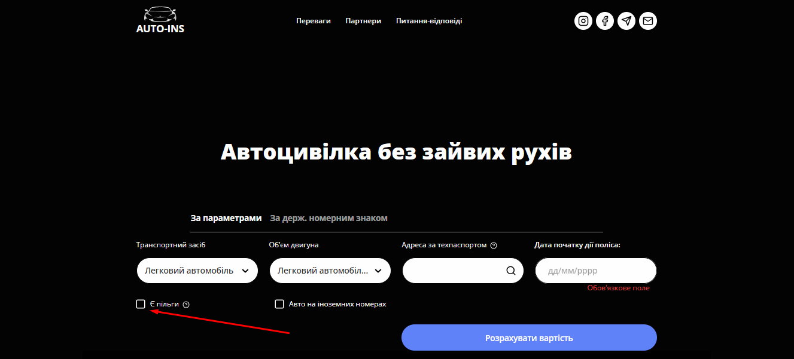

Нові пільги на автоцивілку для учасників бойових дій та осіб з інвалідністю внаслідок війни: держава компенсуватиме вартість ОСЦПВ
17 квітня 2025 року Верховна Рада України прийняла Закон України №4369-ІХ, який суттєво змінює підхід до автострахування для учасників бойових дій та осіб з інвалідністю внаслідок війни. Закон передбачає повну компенсацію вартості автоцивілки (ОСЦПВ) для цих категорій громадян, а також запроваджує постійну знижку 50% на вартість страхового поліса.
Для оформлення автоцивілки з врахуванням пільг на нашому сайті оберіть чекбокс як показано на зображенні.
auto ins, автоинс, аутоинс, ауто инс, autoins, автоинс, авто инс, автоінс, авто інс, ауто інс,
Хто має право на компенсацію ОСЦПВ?
З 1 січня 2025 року і до 31 грудня року, що настає після завершення воєнного стану, держава компенсуватиме вартість страхового поліса автоцивілки для:
-
Учасників бойових дій
-
Осіб з інвалідністю внаслідок війни
Компенсація буде надаватися у повному обсязі, а порядок її отримання визначить Кабінет Міністрів України. Це означає, що оформити ОСЦПВ онлайн безкоштовно зможуть тисячі українських водіїв, які мають відповідний статус.
Пільги при ДТП: що змінюється?
У разі ДТП, яке сталося до 30 червня 2025 року з вини водія, який скористався правом на компенсацію автоцивілки, МТСБУ не має права зворотної вимоги до такого водія, окрім виняткових випадків:
-
Керування в стані сп’яніння
-
Відсутність водійського посвідчення відповідної категорії
-
Залишення місця ДТП
-
Відмова пройти огляд на сп’яніння
-
Використання автомобіля для вчинення кримінального правопорушення
⚠️ Важливо! Якщо водій, який скористався компенсацією вартості поліса, спричинить ДТП у період дії договору, він втратить право на компенсацію при наступному оформленні ОСЦПВ протягом наступного календарного року
На сайті AUTO-INS ви можете швидко оформити автоцивілку онлайн, зазначивши відповідну пільгову категорію. Ми слідкуємо за всіма оновленнями законодавства та оперативно впроваджуємо зміни, щоби ви могли скористатися своїми правами легко та без зайвих зусиль.